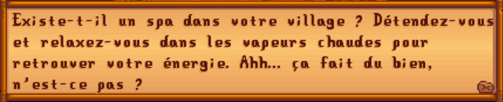

Spa
| Spa | |
 | |
| Heures d'ouverture : | Permanente |
| Fermé : | Jamais |
Le Spa est situé dans la zone de la Voie ferrée. Il devient accessible après le tremblement de terre du 3ème jour de l'Été de la première année, qui débloque le passage depuis la Montagne.
En entrant dans le Spa, après être passé dans le vestiaire et en restant immobile dans l'eau de la piscine, l'Énergie du Joueur et sa Santé sont rapidement restaurées.
Il y a deux vestiaires : hommes et femmes. Le joueur peut entrer dans le vestiaire du genre opposé, mais uniquement en exploitant un bug qui consiste à cliquer rapidement plusieurs fois sur l'entrée du vestiaire depuis la piscine.
En passant par le chemin couvert du vestiaire conduisant à la piscine, le joueur se change en maillot de bain dont la couleur est la même que celle du pantalon choisi par le joueur.
Secrets
Le joueur peut pêcher dans l'eau à l'extérieur du spa, sauf en Hiver lorsque l'eau est gelée. Après avoir lu la Note secrète #25, la première fois que que le joueur y pêche, ...
| Détails |
|---|
| ...il attrapera le Collier orné, qui peut être offert à Caroline pour 50 points d'Amitié avec elle, ou à Abigail pour 100 points d'Amitié avec elle. |
Si le joueur n'a pas encore trouvé la note secrète #25 ou l'a déjà accomplie, une peinture nommée « Paysage » pourra parfois être pêchée. Sinon, seuls des Déchets seront remontés.
Astuce de "Vivre à la ferme"
Le 15ème jour d'Été (années impaires), l'émission de TV "Vivre à la ferme" diffuse un épisode sur le Spa : 
Gallerie

Entrée

Vestiaire de Penny

Vestiaire d'Abigail

Vestiaire d'Alex

Vestiaire des femmes

Intérieur
Anecdote
Il est possible de se rendre au spa avant le 3ème jour d'Été en utilisant le glitch des coups d'épée, permettant au joueur se transporter au dehors de la carte. Il suffit alors de marcher aux alentours pour déclencher l'entrée dans la zone de la voie ferrée, dont l'accès est en principe bloqué par le rocher. Malheureusement, le joueur restera bloqué dans cette zone puisque s'il tente d'en sortir, il restera bloqué derrière le rocher.
Historique
- 1.4 : Ajout de la pêche dans l'eau à l'extérieur du spa. Suppression des bugs permettant aux joueurs de conserver la guérison du spa et/ou la tenue de maillot de bain à l'extérieur du spa.